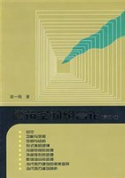

《建筑空间组合论》

总体观点
中国科学院院士、天津大学建筑学院名誉院长彭一刚教授享誉建筑学界的理论奠基力作。全书被全国各大高校建筑学专业奉为本科教育‘第一红宝书’与空间设计圣经。
核心论点：空间是建筑的主角，建筑设计本质上是对空间界定、组合与感知的艺术。建筑形式绝非设计师随心所欲的雕塑游戏，而是功能使用要求、物质结构技术手段与审美精神体验三者辩证统一的具象化结果。
全书以极其清晰的逻辑与数百幅精美绝伦的手绘图解，系统建立了从功能空间形态、结构选型、形式美规律、内外部空间处理到群体环境组合的全套设计方法论，并敏锐剖析了现当代西方建筑思潮的审美变异。
核心观点
-
1. 建筑的形式与内容必须辩证统一，功能是空间的内在规定性
空间形式绝非凭空臆造；人的生理活动尺度、人流流线关系以及设备管线等内在功能要求，从根本上规定了单一空间的长宽高与多空间的连接逻辑。
电影院观众厅必须满足视线无遮挡与声音清晰回响的要求，这一纯功能内容直接规定了其地面必须起坡、平面多呈梯形或扇形。 -
2. 结构技术不仅支撑空间，更是创造全新空间形态的决定力量
结构体系不仅是冰冷的力学承重构件，更是塑造空间性格与可能性的骨骼；大跨度、悬挑与框架技术的每次突破，都催生全新的建筑空间美学。
体育馆与航站楼采用大跨度空间网架或斜拉索悬索结构，才能在中央彻底消除立柱阻挡，创造万余人视线通畅的宏大连续空间。 -
3. 形式美法则具有客观心理学依据，并非纯粹的主观感觉
对称与均衡、对比与微差、韵律与节奏、比例与尺度等形式美规律，根植于人类视知觉的生理与心理机制；遵循形式美法则才能产生和谐秩序感。
现代办公大楼立面通过均匀排列的竖向遮阳百叶创造连续韵律感，在主入口处突然打破局部节奏形成对比，自然烘托出视觉焦点。 -
4. ‘欲扬先抑’：通过对比与渗透创造震撼的内部空间体验
高潮空间的震撼力往往取决于其前导序列的铺垫；通过在动线上精心安排开敞与封闭、明亮与幽暗、高耸与低矮的强烈对比，能成倍放大空间感染力。
参观纪念馆时，设计先让人穿过一条极其压抑低矮幽暗的狭长通道，随后突然步入数十米挑高的光明纪念大厅，产生震撼的精神洗礼。 -
5. 外部体形是内部空间的诚实反映，拒绝形式主义虚假外壳
优秀的建筑体量应当诚实坦白地表达其内部空间的组织关系，绝不能像‘套盒’一样在外面硬套一个脱离实际的对称假壳。
音乐厅的外部造型根据内部声学屋顶的起伏和观众席坡度自然跌落起伏，外在雕塑感与内在功能浑然一体。 -
6. 群体组合必须顺应基地环境，融于自然地形地貌
单体建筑无论多么精彩，一旦脱离具体场地环境就会沦为突兀怪物；必须依据等高线、朝向与周边肌理，通过院落、平台与连廊达成群体和谐。
重庆山地建筑依山就势采用错层、挑台与吊脚楼手法顺应山体陡坡，既最大限度减少土石方开挖破坏，又创造出层次丰富的立体山城街景。
全书结构
-
第一章 总论
确立建筑设计的唯物辩证法：功能使用要求、物质技术手段与审美精神要求三者对立统一的辩证关系。
影剧院设计中声学视线功能决定了观众厅扇形平面的基本雏形，结构技术解决大跨度顶棚，在此基础上追求形式美。 -
第二章 功能与空间
分析人体活动尺度对单一空间的规定性，以及主次、内外、流线逻辑对多空间组合形态的支配作用。
火车站站房设计必须严格区分进站旅客流线、出站流线与行李货运流线，通过空间组织避免人流对冲交叉混乱。 -
第三章 空间与结构
探讨承重墙梁板、框架、大跨度网架、悬索与薄壳结构体系对建筑空间形态的塑造与限制。
体育馆或候机楼采用大跨度空间网架或悬索结构，才能在中央消除立柱阻挡，创造万余人视线无遮挡的宏大开敞空间。 -
第四章 形式美的规律
系统总结建筑构图的几何统一、主从与重点、均衡与稳定、对比与微差、韵律与节奏、比例与尺度等美学法则。
柯布西耶萨伏伊别墅通过底层独立支柱形成的明快虚实对比，与二层横向长窗的水平韵律，构成了强烈的现代形式美。 -
第五章 内部空间的处理
阐述单一空间的长宽高比例调整，以及多空间组合中通过穿插、借景、高差过渡营造丰富空间层次的手法。
通过低矮的前厅过渡到豁然开朗的高大中庭，强烈的‘压抑-释放’对比让人在步入核心展厅时产生震撼的心理高潮。 -
第六章 外部体形的处理
体形是内部空间的真实反映，通过体量切削、虚实对比、立面虚实划分塑造建筑鲜明的个性性格。
美术馆体形采用厚实少窗的沉稳大理石封闭体块，而办公楼采用通透玻璃幕墙，立面直观表达建筑内在属性。 -
第七章 群体组合的处理
研究建筑与周边自然地形地貌的顺应结合，利用院落、轴线、连廊形成有机和谐的建筑组团环境。
山地建筑依山就势采用错层、吊脚、退台手法顺应等高线布局，既节省土石方工程，又与自然山体轮廓融为一体。 -
第八章 当代西方建筑的审美变异
梳理西方建筑从古典构图、现代功能主义技术美学到后现代、解构主义多元分化的审美演变动因。
后现代主义建筑打破密斯‘少就是多’的冷漠玻璃盒子，引入历史隐喻、符号拼贴与折衷主义装饰重拾城市历史文脉。 -
第九章 当代西方建筑赏析
精选当代西方建筑大师经典作品，深入剖析奇正相生、高技派、迈耶白色派与地域风格的实际构图实践。
理查德·迈耶在法兰克福手工艺博物馆中，以精致纯白的几何网格旋转、层层穿插的坡道与通光中庭重塑空间生命力。